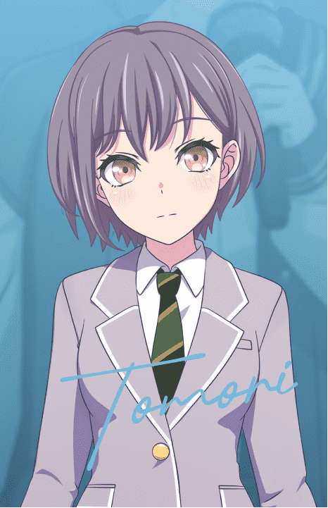
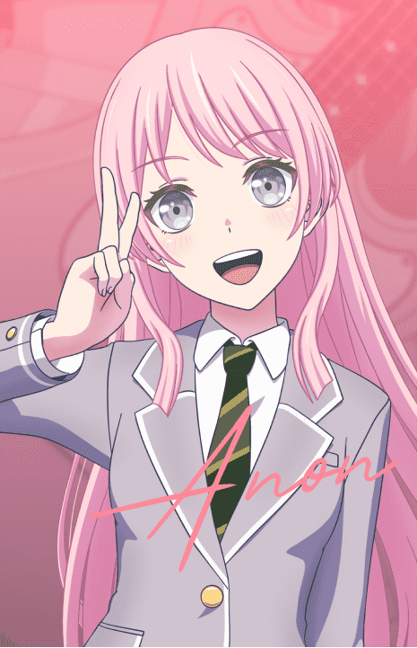
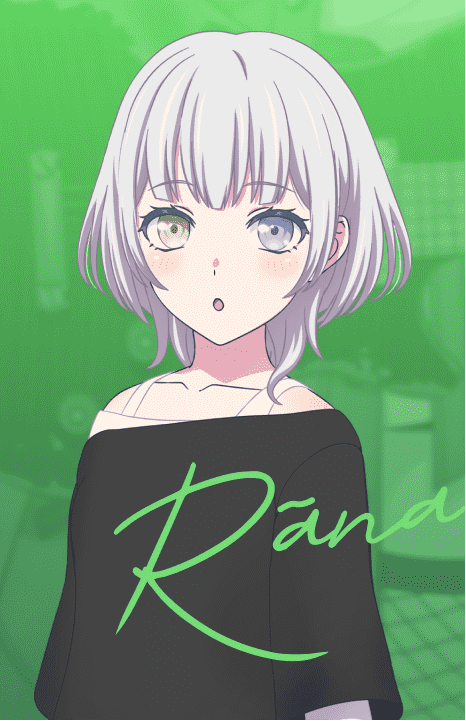
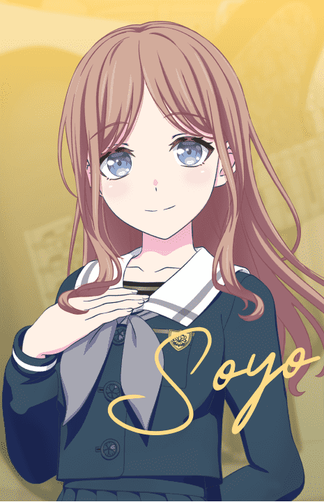
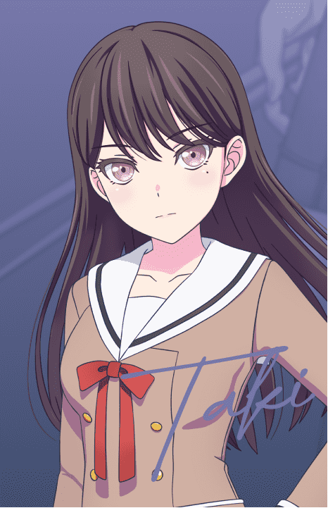

Intoduction

MyGO!!!!! is an all-girl band in the BanG Dream! franchise. The group consists of five members, namely Takamatsu Tomori on vocals, Chihaya Anon and Kaname Raana on guitar, Nagasaki Soyo on bass, and Shiina Taki on drums. It is a band born from the synchronization of "reality" and "virtual".
The band members initially were unknown and hid their faces while performing, before they were finally revealed during MyGO!!!!! 4th LIVE.
On June 27, 2023, it was announced that they would be added into Girls Band Party! in Fall 2023.[1] They were added on September 16, 2023 for the Japanese server currently.
Trivia
Their band name "MyGO!!!!!" is a play on the Japanese word "迷子" (maigo), which can be found on the band's slogan "迷子でもいい、前へ進め。" It literally means lost child/children.
The character illustrations were done by Shuzuku.
They had their very own anime announced on April 9, 2023.[2] It began airing on June 29, 2023.
Their family names (Takamatsu, Chihaya, Kaname, Nagasaki and Shiina) are all based on the names of areas in Toshima.
Member

Takamatsu Tomori | Vocals

Chihaya Anon | Guitar

Kaname Raana | Guitar

Nagasaki Soyo | Bass

Shiina Taki | Drums